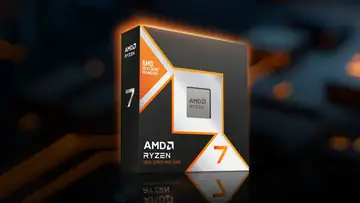
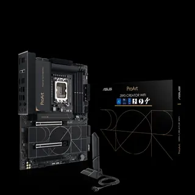
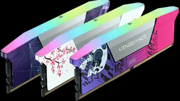
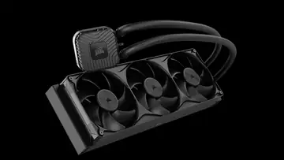

PC HARDWARE / BUILDS / SUPPORT
MAKE
THE PC
YOURS.
VoltTech is for people who care how the machine actually feels to use. Build a new system, buy the right hardware, fix the one you have, or push it harder.

START WITH THE JOB
What do you need the PC to do?
Start with games, work, display and budget—not a random parts list.
↗ 02Buy a componentBrowse the part categories and compare what actually changes performance.
↗ 03Fix or upgradeRepair faults, improve thermals, tune performance or upgrade the bottleneck.
↓ 04Sort out a streamCreator PCs, OBS, audio, capture and encoder support.
↗HARDWARE / 01
THE MACHINE
STARTS HERE.
Prototype categories only. No live stock or pricing is connected in V5 yet.
 01
ProcessorsCPU
01
ProcessorsCPU
02 FoundationBOARD
03 MemoryRAM
04 StorageSSD 05
ThermalsCOOLING
05
ThermalsCOOLING
06PC BUILDER / 02
START WITH
THE TARGET.
Instead of dropping you into a wall of products, V5 starts by asking what matters: what you play or create, the display you use, and how much you want to spend.
- Use-case first
- Budget aware
- Compatibility later
- Every part still editable

DIAGNOSTICS / 04
DON'T
GUESS.
Start from what the PC is doing wrong. Narrow the likely cause before you start replacing parts.
Run Signal Scan →